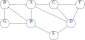

Consider the problem of assigning tasks to days in a month, where a full day must be dedicated to any task (and just that task) in order to get it done. Each task has a payoff and a deadline, and you get the payoff amount if you get the job done on or before before the the day given as a deadline. You don’t get anything if the job is not done by the deadline.
For example, Task 1 has payoff $40 if completed by the 3rd, Task 2 has payoff $30 if completed by the 3rd, and Task 3 has payoff $20 if completed by the 1st.
This sounds like a good situation for a greedy algorithm, so we try the following greedy strategy: We do the most valuable job first, and so on. For the example problem, on the 1st we do Task 1, since it is worth $40. Then we do Task 2 on the 2nd for $30. We have passed the deadline for Task 3, so we can’t get paid for that one at all now, and our total payoff is $70. However, if we had done the tasks in the order 3, 2, 1, then we could have made $90 – clearly this way of being greedy didn’t work.
Here’s a strategy that does work: Pick the highest profit job, schedule it in the last available slot before its deadline, and repeat. I call this the “procrastination pays” strategy. You can’t always schedule a job at its deadline if other jobs have been scheduled then, so just move earlier in the schedule until you find an open slot (if one exists). So in our example problem, we would take Task 1 (the most valuable) and schedule it on the 3rd, the latest time possible that is within the deadline. Then we select Task 2 (the 2nd most valuable job), and the latest time available that is still before its deadline is on the 2nd, so that’s when we schedule Task 2. Now we can schedule Task 1 on the 1st, so we have scheduled all jobs.
It turns out that this strategy always maximizes your payoff.
Formalize the problem by defining notation for the input, describing the objective function and the goal in solving the problem.
State and prove the greedy choice property for this algorithm. You only need to prove the greedy choice property, not the overall correctness of the algorithm.
Perform a depth-first search of the following graph, showing the final result with the discovery and finishing times for each vertex, and the classification of each edge. Vertices are always given in alphabetical order, whether in the overall vertex list or in any adjacency list. Your result should be in a form similar to Figure 22.5(a) in the book. Note that you only need to give the final result – you don’t need to show your work or any intermediate steps.

[Note added after the assignment, for anyone outside the class that stumbles across this page: This was a bad problem, and is the result of what happens when you design a problem by thinking back from an algorithm to create a problem, without giving enough thought to the problem itself. This is an interesting modification to the topological sort algorithm given in CLRS, but approaching the problem without that in mind it is totally trivial. In fact, you can set directions to produce any topological ordering that you want: just number the vertices according to the ordering you want, and then orient edges from lower-number to higher-number. Oh well, when you make up your own problems they can’t all be gems!]
Given an undirected graph, you want to assign directions to each edge so that the resulting directed graph is acyclic and can provide a topological sort that starts at a designated vertex. For example, given the graph on the left below, we want a directed acyclic graph in which a topological sort can start at vertex A, so we create the directed graph on the right. The numbers beside the vertices indicate their order in the topological sort.
Is this possible for every undirected graph? Justify your answer as clearly as possible.
Give an algorithm for doing this. For up to 10 points of extra credit, your algorithm should both assign directions and give the topological sort sequence numbering with just one search through the graph.
Consider the following problem: You have access to a set of \(n\) devices, numbered \(1\) through \(n\), and connections can be made between any pair of devices. If you make a direct connection between devices \(i\) and \(j\), you get paid \(p_{i,j}\) dollars. The \(p_{i,j}\) values are arbitrary, but symmetric – meaning that \(p_{j,i}=p_{i,j}\) for all \(i\) and \(j\). The only thing stopping you from connecting all the pairs together is the following problem: if there is both a multi-hop path and a direct connection between two devices, then the connections are out of sync and the feedback makes everything explode and destroy the world. Clearly it’s hard to enjoy your money if the world has been destroyed, so you would like to avoid this, while maximizing the amount you get paid.
Here’s an example: You have three devices, with the following values for connctions: \(p_{1,2}=50\), \(p_{1,3}=40\), and \(p_{2,3}=30\). You can connect device \(1\) to device \(2\) and device \(1\) to device \(3\) to earn \(90\) dollars. However, you can’t hook device \(2\) to device \(3\) at this point, because there would be both a direction connection between \(2\) and \(3\) and a multi-hop path between these two devices that goes through \(1\). \(\$90\) is the best you can do for this example problem.
State this problem clearly as a problem on weighted graphs.
How is this related to the minimum spanning tree problem? Be very specific!
Give an efficient algorithm that solves this problem, and prove that it gives the correct answer. [Hint: Given the relation to the MST problem, there are two approaches to this: For one, you can pre-process your input, solve a MST problem, and then prove how the MST is related to the answer you need. Alternatively, you can modify an MST algorithm to work directly with this data (no pre-processing) to find the result directly, and then modify the proof of correctness for the algorithm to apply to your new algorithm.]
Programming Challenges — given on a separate page.